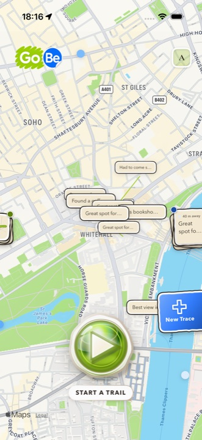
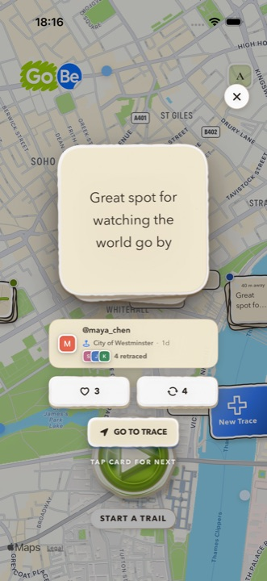
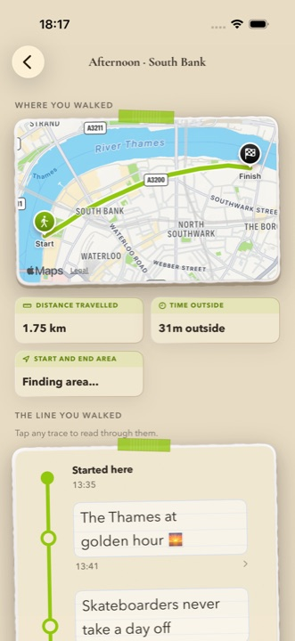
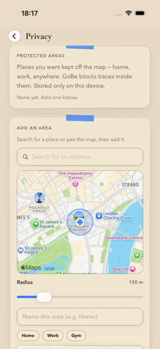

Leave a trace · Go be there
A little of your day, left where it happened.
GoBe turns the places you go into a living map. Drop short notes and photos as you move, and discover the traces other people have left behind, all around you.
Made in the UK · For ages 16+ · Coming to the App Store


Traces
Read what others left behind.
A Trace is a small thing someone noticed here — a note, a photo, a tip. Tap one open to read it, like it, or retrace it onto your own map. Your neighbourhood, told by the people who walk it.

Trails
Keep the path, not just the memory.
Press play and GoBe quietly records the route you take. When you finish, you get a keepsake of your day — the line you walked, how far you went, and every trace you dropped along the way, in order.

Privacy first
Your map, not your whereabouts.
Traces are saved to an approximate spot — never your exact location. Mark protected areas like home or work and GoBe keeps them off the map, stored only on your device. No ads, and we never sell your data.
Nothing following you around. GoBe is not built on attention.
We never sell it. Delete your account and content any time.
A small, independent app, run by one person.
Higher-privacy defaults for younger users, by design.
Go be somewhere.
GoBe is on its way to the App Store. In the meantime, here's everything about how it works and how we look after your data.